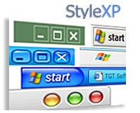
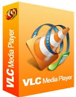
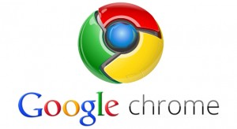

<!DOCTYPE html><html><head><meta charset="utf-8"><meta name="viewport" content="width=device-width, initial-scale=1, maximum-scale=1"><title>TKPPL | Software</title><link rel="stylesheet" type="text/css" href="bower_components/prism/themes/prism.css"><link rel="stylesheet" type="text/css" href="bower_components/todc-bootstrap-main/dist/css/bootstrap.min.css"><link rel="stylesheet" type="text/css" href="styles/main-presentation.css"></head><body></body></html><nav role="navigation" class="navbar navbar-default"><div class="container"><div class="navbar-header"></div><div id="presentation-chooser" class="collapse navbar-collapse"><ul class="nav navbar-nav"><li class="dropdown"><a data-toggle="dropdown" href="#" class="dropdown-toggle">Pilih Presentasi <b class="caret"></b></a><ul class="dropdown-menu"><li><a href="1-Introduction.html">Pengenalan Komponen Komputer</a></li><li><a href="Sejarah.html">Sejarah</a></li><li><a href="Hardware.html">Hardware</a></li><li><a href="Software.html">Software</a></li><li><a href="Brainware.html">Brainware</a></li></ul></li></ul></div></div></nav><article id="presentation"><section><h2>SOFTWARE</h2></section><section><h2>PENGERTIAN SOFTWARE</h2><ul><li>Software (perangkat lunak) merupakan program-program komputer yang berguna untuk menjalankan suatu pekerjaan sesuai dengan yang dikehendaki. Program tersebut ditulis dengan bahasa khusus yang imengerti oleh komputer. Software terdiri dari beberapa jenis, yaitu;</li></ul></section><section><h2>Perkembangan software</h2><ul><li>Perkembangan software dibagi kedalam empat periode yaitu :</li><li>Periode Pioner </li><li>Periode Stabil </li><li>Periode Mikro </li><li>Periode Modern </li></ul></section><section><h2>Periode Pioner(1950-1963)</h2><ul> <li>Bentuk perangkat lunak pada awalnya adalah sambungan-sambungan kabel antar bagian dalam komputer.</li><li>Penggunaan komputer saat itu masih dilakukan secara langsung, sebuah program untuk sebuah mesin dan digunakan untuk tujuan tertentu.</li><li>Penggunaan komputer dilakukan secara langsung dan hasil yang selesaidikerjakan komputer berupa print out.</li><li>Proses yang di lakukan di dalam komputer berupa baris instruksi yang diproses secara berurutan.</li></ul></section><section><h2>Periode Stabil(1963-1980)</h2><ul> <li>Pada era stabil penggunaan komputer sudah cukup meluas dan banyak digunakan di berbagai kalangan.</li><li>Baris-baris perintah perangkat lunak yang dijalankan oleh komputer dilakukan secara serempak (multi tasking).</li><li>Satu perangkat lunak dapat digunakan oleh banyak pengguna (multi user) secara cepat/langsung (real time).</li><li>Mulai diperkenalkan sistem basis data, yang memisahkan antara program (pemroses) dengan data (yang di proses).	</li></ul></section><section><h2>Periode Mikro (1980-1990)</h2><ul><li>Perangkat lunak dapat dibedakan menjadi perangkat lunak sistem yang bertugas menangani internal, dan perangkat lunak aplikasi yang digunakan secara langsung oleh penggunannya untuk keperluan tertentu.</li><li>Automatisasi yang ada di dalam perangkat lunak mengarah ke suatu jenis kecerdasan buatan.</li></ul></section><section> <h2>Periode Modern (1990-sampai sekarang)</h2><ul> <li>Perangkat lunak/software terdapat pada hampir semua perangkat elektronik.</li><li>Semua perangkat yang memiliki software dapat saling terhubung secara otomatis.</li><li>Pembuatan sebuah perangkat lunak bukan lagi pekerjaan sebagian orang, tetapi telah menjadi pekerjaan banyak orang, dengan beberapa tahapan proses yang melibatkan berbagai disiplin ilmu dalam perancangannya.</li><li>Tingkat kecerdasan yang ditunjukkan oleh perangkat lunak pun semakin meningkat, selain permasalahan teknis, perangkat lunak sekarang mulai bisa mengenal suara dan gambar.</li></ul></section><section><h2>Jenis Software</h2><ul> <li>Berdasarkan Fungsinya terbagi menjadi:</li><li>a. Perangkat lunak Sistem</li><li>Perangkat lunak yang kegunaannya lebih banyak ditujukan untuk operasional komputer, seperti:</li><li>Sistem operasi seperti Windows, linux, MacOS, dll.</li><li>Penerjemah bahasa pemrograman (compiler/interpreter) seperti C, Java, C++, C#, dll.</li></ul></section><section> <ul> <li>b. Perangkat lunak Aplikasi</li><li>Perangkat lunak yang kegunaannya lebih banyak ditujukan untuk membantu menyelesaikan masalalah-masalah yang dihadapi oleh pemakai.</li><li>Program paket yang sudah jadi seperti word, exel, photoshop, dll.</li></ul></section><section><ul>Jenis Software berdasarkan Aplikasi-nya terbagi atas:<li>1. Perangkat Lunak Sistem (Sistem Software)</li><li>2. Perangkat Lunak Waktu Nyata (Real Time Software)</li><li>3. Perangkat Lunak Bisnis (Business Software)</li><li>4. Perangkat Lunak Rekayasa dan Sains (Engineering and Scientific Software)</li><li>5. Embedded Software</li><li>6. Perangkat Lunak Komputer Pribadi (Personal Computer Software</li><li>7. Perangkat Lunak Intelegensia Buatan (Artifical Intelligent Software)</li></ul></section><section><h2>1. Perangkat Lunak Sistem (Sistem Software)</h2><ul> <li>Perangkat lunak sistem adalah suatu istilah generic yang merujuk pada jenis perangkat lunak komputer yang mengatur dan mengontrolperangkat keras sehingga perangkat lunak aplikasi dapat melakukan tugasnya.			</li></ul></section><section><ul> <li>Perangkat lunak sistem dapat di bagi menjadi 3 macam yaitu :</li><li>1. Bahasa pemrograman </li><li>merupakan perangkat lunak yang bertugas mengkonversikan arsitektur dan algoritma yang di rancang manusia ke dalam format yang dapat di jalankan komputer, contoh bahasa pemrograman di antaranya : BASIC, COBOL, Pascal, C++, FORTRA</li><li>2. Sistem Operasi</li><li>saat komputer pertama kali di hidupkan, sistem operasilah yang pertama kali di jalankan, sistem operasi yang mengatur seluruh proses, menterjemahkan masukan, mengatur proses internal, memanejemen penggunaan memori dan memberikan keluaran ke peralatan yang bersesuaian, contoh sistem operasi : DOS, Unix, Windows 95, 98, 2000, Xp, Vista , IMB OS/2, Apple System 7</li><li>3. Utility</li><li>sistem operasi yang merupakan perangkat lunak sistem dengan fungsi tertentu, misalnya pemeriksaan perangkat keras (hardware troubleshooting), memeriksa disket yang rusak (bukan rusak fisik), mengatur ulang isi harddisk (partisi, defrag), contoh Utilty adalah Norton Utility.</li></ul></section><section> <h2>2. Perangkat Lunak Waktu Nyata (Real Time Software)</h2><ul> <li>Real time software adalah perangkat lunak yang mengukur, menganalisa, dan mengontrol kejadian nyata yang real time. Elemen dari perangkat lunak real time mencakup komponen pengumpulan data yang mengoleksi dan memformat informasi dari lingkungan eksternal, dan mengawasi komponen yang berkoordinasi dengan komponen lainnya sehingga respon real time dapat dipertahankan. Harus diperhatikan bahwa istilah real time berbeda dengan interactive atau timesharing. Sistem real time harus merespon dalam batasan waktu yang ketat (biasanya 1 milidetik sampai 1 menit). Waktu respon sistem interactive atau timesharing bisa melebihi waktu tertentu tanpa adanya kerusakan pada hasil.</li></ul></section><Section><h2>3. Perangkat Lunak Bisnis (Business Software)</h2><ul><li>Perangkat lunak yang memberikan fasilitas operasi untuk bisnis atau fasilitas pengambilan keputusan manajemen.</li><li>contoh : sistem akuntansi, inventory, payroll dan lain-lain.</li></ul></Section><Section><h2>4. Perangat Lunak Rekayasa dan Sains (Engineering and Scientific Software)</h2><ul> <li>Perangkat lunak yang digunakan di dalam bidang aplikasi teknik dan kerekayasaan. </li><li>Perangkat lunak jenis ini biasanya berhubungan dengan komputasi data numerik, CAD (Computer Aided Design), simulasi sistem, dan lain-lain.</li><li>karakteristik engineering dan scientific software adalah digunakannya sejumlah algoritma yang rumit. Lingkup aplikasi mulai dari astronomi hingga vulkanologi, dari biologi molekuler hingga pabrikan otomatis. Aplikasi barunya berupa sistem simulasi dan sistem interaksi lainnya yang bersifat real-time. </li><li>contoh : AutoCAD</li></ul></Section><section><h2>5. Embedded Software </h2><ul> <li>Embedded software merupakan sejenis produk pintar yang saat ini banyak digunakan sebagai alat bantu.</li><li>Embedded software digunakan untuk mengatur produk dan sistem untuk konsumen dan pasar industry. </li><li>contoh: fungsi-fungsi digital pada kendaraan seperti alat ukur tangki bensin, tampilan dashboard, sistem rem dll. </li></ul></section><Section><h2>6. Perangkat Lunak Komputer Pribadi (Personal Computer Software)</h2><ul><li>Merupakan software yang banyak digunakan untuk keperluan pribadi dan perkantoran.</li><li>PC software merepresentasikan rancangan interface manusia-komputer yang paling inovatif.</li><li>contoh : pengolah kata, spreadsheet, game, DBMS, computer graphic, entertainment, aplikasi bisnis keuangan dan lain-lain.</li></ul></Section><section> <h2>7. Perangkat Lunak Intelegensia Buatan (Artificial Intelligent Software)</h2><ul> <li>merupakan software yang dirancang sehingga seolah-olah memiliki kemampuan berpikir.</li><li>Dibuat dengan menggunakan teknik algoritma non-numerik untuk memecahkan masalah yang kompleks, digunakan dalam bidang aplikasi kecerdasan buatan</li><li>contoh : game, expert sistem(knowledge based system), neural network, dan lain-lain</li></ul></section><section><ul>Jenis software berdasarkan cara memperolehnya(harga beli dan legalitas)<li>1. Freeware</li><li>2. Shareware</li><li>3. Open source</li></ul></section><section><h2>Freeware </h2><ul> <li>Freeware adalah sebuah software yang bisa di download dan digunakan dengan gratis, tetapi kita sebagai pengguna tidak bisa melihat source code software tersebut karena masih memiliki batasan atas hak cipta pengguna.</li><li>Karena softwatre ini bersifat freeware, maka software ini tanpa batasan jumlah dan waktu dalam pemakaiannya. Konten freeware itupun sendiri beragam, yaitu berupa aplikasi (software), dokumen, source code, engine web (wordpress, CMS, PHPBB).</li><li>contoh Paint.net, Rocket Dock, Ccleaner, dan lain-lain.</li></ul></section><section><h2>Shareware</h2><ul> <li>Shareware adalah sebuah software yang dapat di download tanpa biaya (gratis) tetapi mempunyai batasan waktu yang ditentukan. Jadi jika pemakaian software ini sudah melebihi batas waktu yang ditentukan, software ini meminta si pengguna membeli full version atau fitur software aslinya.</li><li>Shareware ini bertujuan sebagai uji coba suatu software sehingga para pengguna bisa mengetahui software ini sebelum membelinya. Setelah masa uji coba selesai, software bisa saja terkunci dan tidak bisa dipakai lagi atau masih bisa digunakan tetapi hanya bisa beberapa menit lalu di minta untuk membeli softwarenya. Shareware masih dibatasi oleh hak cipta.</li><li>Contoh StyleXP, Window Blinds, WinRar, dan lain-lain.</li></ul></section><section><h2>Open Source</h2><ul><li>Open Source adalah software yang dapat di download dan source code-nya dapat dibuka oleh public sehingga pengguna tersebut biasa mengubah dan memperbaiki software tersebut, bahkan dapat dikembangkan secara kolaborasi. </li><li>Berbeda dengan jenis software yang disebutkan diatas, open source software memberikan kebebasan kepada kita untuk menggunakan. mengubah sesuai dengan kebutuhan, mendistribusikan kembali, baik software aslinya maupun yang telah kita ubah. </li><li>Biasanya software bersifat open source menyertakan kode sumber dalam pendistribusiannya. Tujuan pembuatan open source software ini biasanya bukan untuk tujuan komersial, namun lebih ke tujuan social bagaimana sebuah software bisa bermanfaat bagi para pengguna.</li><li>Contoh Pidgin, gGo, Inkscape, Linux, Google, gimp dan lain-lain.</li></ul></section><section><h2>Contoh Software</h2><ul></ul><ul></ul></section></article><script src="bower_components/bespoke.js/dist/bespoke.min.js"></script><script src="bower_components/bespoke-bullets/dist/bespoke-bullets.min.js"></script><script src="bower_components/bespoke-scale/dist/bespoke-scale.min.js"></script><script src="bower_components/bespoke-hash/dist/bespoke-hash.min.js"></script><script src="bower_components/bespoke-progress/dist/bespoke-progress.min.js"></script><script src="bower_components/bespoke-state/dist/bespoke-state.min.js"></script><script src="bower_components/prism/prism.js"></script><script src="bower_components/prism/components/prism-bash.min.js"></script><script src="scripts/main.js"></script><script src="bower_components/jquery/jquery.min.js"></script><script src="bower_components/todc-bootstrap-main/dist/js/bootstrap.min.js"></script>